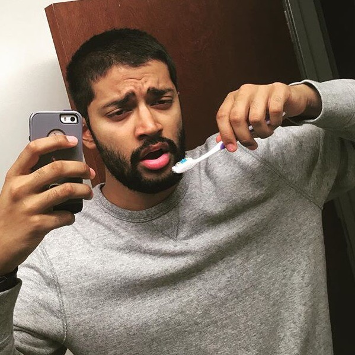
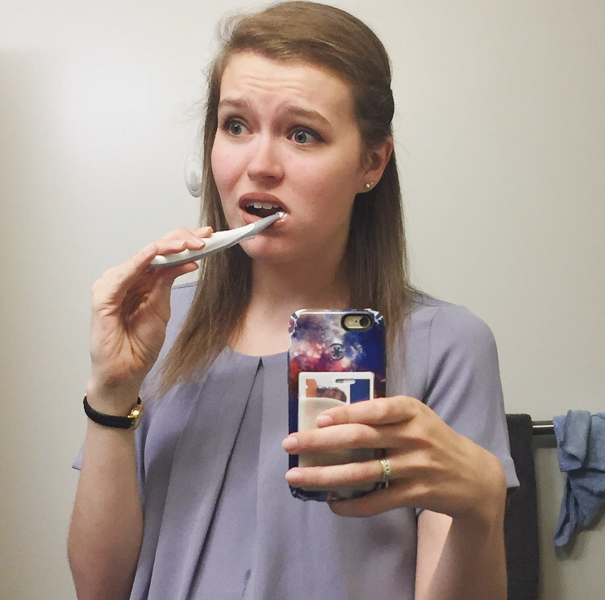
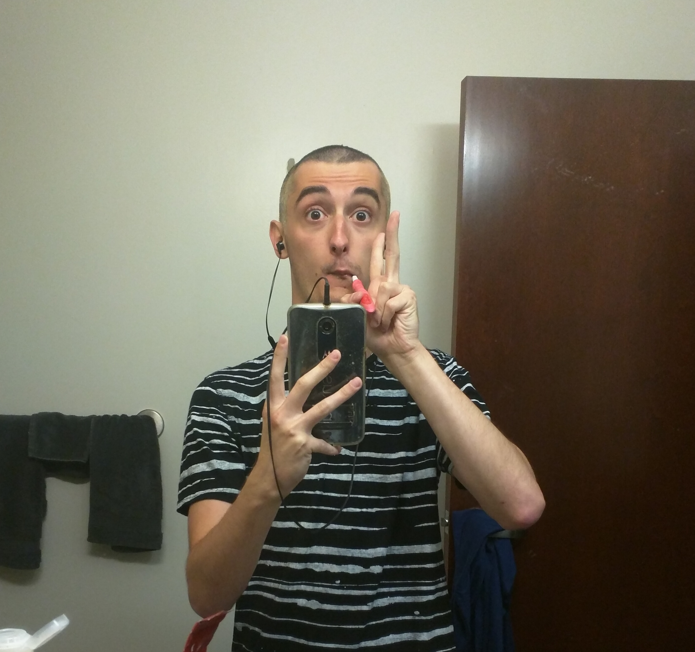
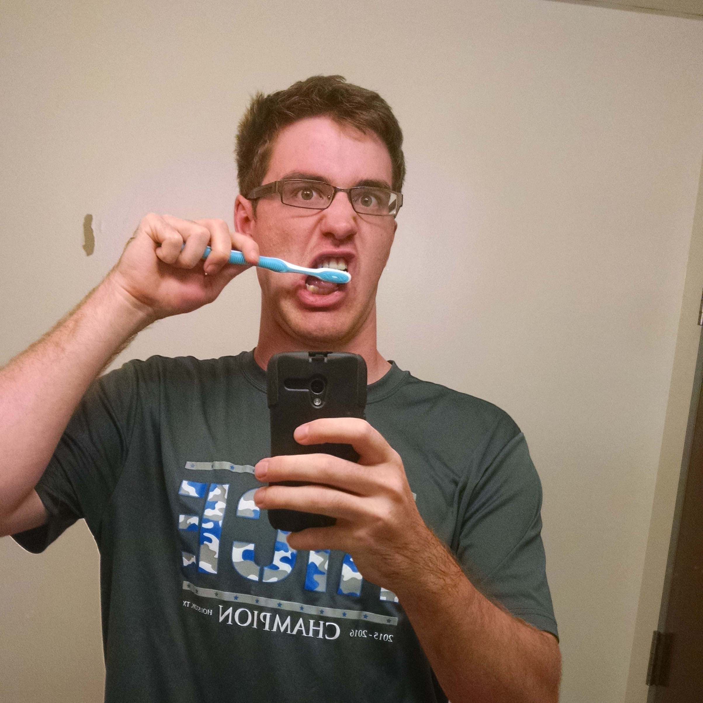
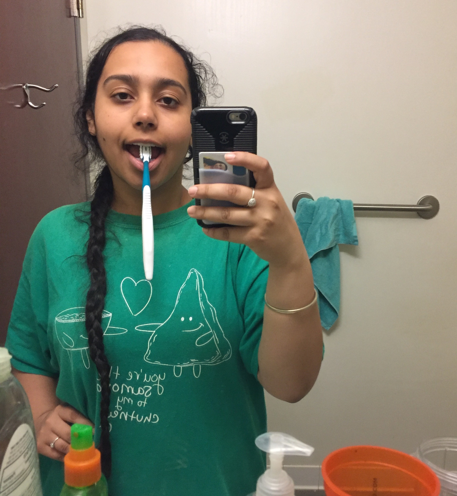
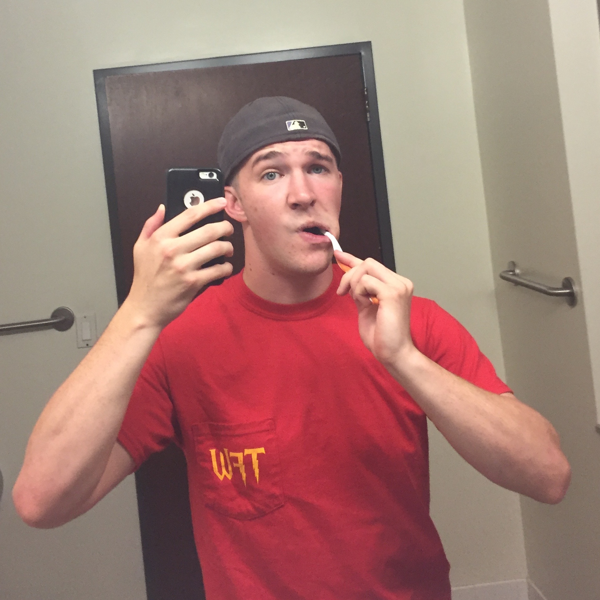

<div class="panel">
    <div class="panel-body">
        <div id="cabdesc" class="well">
            <h2>Wiess Court</h2>
            <p>Wiess Court is a safety net. Court makes sure that all Wiessmen are aware of the basic rules that are in place and abide by them so we can keep our privileges, such as a “wet” campus and a quiet, trusting atmosphere. If anything goes wrong, we try to deal with it inside the college. By acting as a liason between Wiessmen and Student Judicial Programs/RUPD, we try to resolve issues quickly and effectively. When things arise that court is not fit to handle, they may be settled by the Adult Team (Masters and RA's), and if an issue is beyond their clearance, it is settled entirely by University Court and Student Judicial Programs.</p>
            <p>Court’s job is to support an environment of mutual respect and responsibility by enforcing both Wiess College rules and Rice University rules. Most of these rules are common sense, and even as a new student, you should have no problem abiding by them. Any academic violations should be reported to the Honor Council. However, if you’ve got non-academic issues, questions, concerns, complaints, problems or irreconcilable intra-college disputes, please do not hesitate to contact any of the Wiess Court members to talk about it. With good common sense and responsibility, we can ensure that Wiess College remains a safe and enjoyable environment for all of its inhabitants.</p>
        </div>
        <hr>
        <table width="100%" border="0" cell-padding="30px" cell-spacing="30px" style="border-color: #ddd;" rules=rows>
          <col width="30%" height="100%">
          <col width="30%" height="100%">
          <col width="30%" height="100%">
        <tr>
        <td align="center" valign="top">
          
          <h3>Chief Justice</h3>
          <h2>Akash Ghosal</h2> <p>Email: goldenrod@rice.edu<br>Phone: (832) 488-6442</p><br>
          <p style="max-width:90%">My name is Akash, and I like to party. As CJ, I oversee Wiess Court and any required actions (levying of fines, investigation of damages, inquiries into violations of the alcohol policy. I'm also a liaison between the students and RUPD, and I act as first responder for noise complaints and out-of-control private parties. Lastly, I am a representative of the college for Student Judicial Programs, and I work with the dean’s office, SJP, and the other chief justices to coordinate programs related to the alcohol policy and the student code of conduct (as well as broader health, safety, and general welfare concerns).</p>
        </td>
        <td align="center" valign="top">
          
          <h3>Associate Justice</h3>
          <h2>Margaret Roddy</h2> <p>Email: mhr2@rice.edu<br>Phone: (865)806-8685</p><br>
          <p style="max-width:90%">I am committed to keeping Wiess safe and happy. I will make sure everyone is treated fairly and with respect. I love giraffes, hot tea, hiking, and hammocking.</p>
        </td>
        <td align="center" valign="top">
          
          <h3>Associate Justice</h3>
          <h2>Tyler De Salazar</h2> <p>Email: tdd3@rice.edu<br>Phone: (954)756-1105</p><br>
          <p style="max-width:90%">I joined Court for a very simple reason: to keep Wiess safe. We have a lot of privileges here, and I want to ensure we continue to maintain them while having fun in a very safe and responsible manner. If you ever have questions about the alcohol policy, Wiess Court, or anything related never hesitate to reach out to me or any other member of Court. TFW!</p>
        </td>
        <tr>
<!-- ROW 2 -->
          <td align="center" valign="top">
          
          <h3>Associate Justice</h3>
          <h2>Chris Thomas</h2> <p>Email: mathematician@rice.edu<br>Phone: (512) 461-7770</p><br>
          <p style="max-width:90%">Hi. I am Chris. I like baseball. I like math. </p>
        </td>
        <td align="center" valign="top">
          
          <h3>Associate Justice</h3>
          <h2>Jagnoor Benipal</h2> <p>Email: jkb10@rice.edu<br>Phone: (337) 425-0616</p><br>
          <p style="max-width:90%">Hey Wiess! My name is Jagnoor and I'll be one of your Associate Justices this year. Court is here to keep Wiessmen safe so please reach out to any of us if you have any questions or concerns!</p>
        </td>
        <td align="center" valign="top">
          
          <h3>Deputy Justice</h3>
          <h2>Drew Morales</h2> <p>Email: dam10@rice.edu<br>Phone: (409) 370-8495</p><br>
          <p style="max-width:90%">Hey guys, I'm Drew and I'm your DJ on Court (1 of 2). I'm looking forward to carrying out Court's duty of promoting safety and responsibility while also ensuring people can still have fun.</p>
        </td>
        <tr>
<!-- ROW 3 -->
          <td align="center" valign="top">
          
          <h3>Deputy Justice</h3>
          <h2>Drew Keefer</h2> <p>Email: dwk2@rice.edu<br>Phone: (864) 504-9830</p><br>
          <p style="max-width:90%">Hey Wiess! As Deputy Justice, I'll do my best to keep Wiess a safe and enjoyable place where everyone feels welcome. I'm looking forward to learning from the more experienced members of Court so I can carry on their fantastic precedent for years to come.</p>
        </td>
          <tr>
    </div>
</div>
